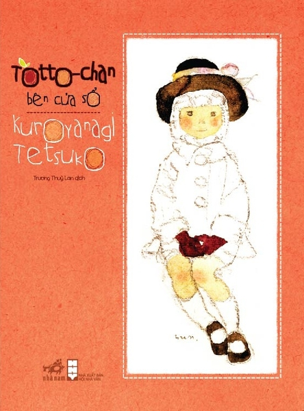

“Hãy để các cháu phát triển tự nhiên. Đừng cản trở khát vọng của các cháu. Ước mơ của các cháu lớn hơn mơ ước của các cô.”
— Thầy hiệu trưởng Kobayashi —
Nhóm Totto-chan thực hiện
Lê Thị Tường Vy
Ngô Trương Minh Đạt
Nguyễn Thạch Hà Anh
Nguyễn Đình Lộc
Ngô Trương Minh Đạt
Nguyễn Thạch Hà Anh
Nguyễn Đình Lộc
▶ Bấm để bắt đầu nghe

Sách nói DAISY · Trẻ em & Thiếu nhi
Totto-chan Bên Cửa Sổ
◆
Hồi ký tuổi thơ của cô bé Totto-chan - một đứa trẻ hiếu động bị cho là "khác thường" và bị đuổi khỏi trường công lập. Cô được nhận vào trường Tomoe - nơi các lớp học diễn ra trong những toa tàu cũ - do thầy hiệu trưởng Kobayashi sáng lập. Tại đây, Totto-chan được tự do khám phá, học theo cách riêng và dần nhận ra giá trị của bản thân. Câu chuyện là bức thư tình gửi đến tuổi thơ, sự giáo dục nhân văn và lòng bao dung.
Tác giảTetsuko Kuroyanagi
ISBN9786041194861
Nhà xuất bảnNXB Văn Học - Nhã Nam
Năm xuất bản2011
Ngôn ngữTiếng Việt
Thể loạiTrẻ em & Thiếu nhi
Giọng đọcHoài My (Microsoft Neural TTS)
Định dạngSách nói DAISY 3 (Audio MP3)
Thời lượng3:31:13
Lượt xem